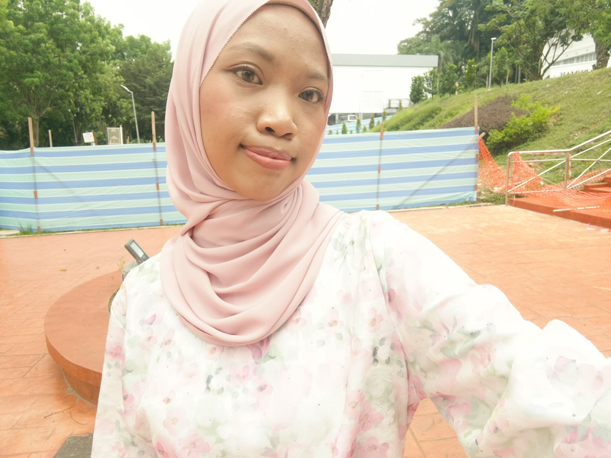

SEKINCHAN (سكينچن)
For the SIH2024 Environmental Informatics course, I developed a website showcasing Sekinchan as my hometown, highlighting its environmental ecosystem, key environmental issues, and tourism attractions.
Read More →Thoughts, stories, and everything in between.

Welcome to my personal blog! I am a university student that passionate in writing blog. I love sharing my journey, things I learn along the way, and documentation of my daily life. Grab a cup of tea and enjoy your stay!
For the SIH2024 Environmental Informatics course, I developed a website showcasing Sekinchan as my hometown, highlighting its environmental ecosystem, key environmental issues, and tourism attractions.
Read More →